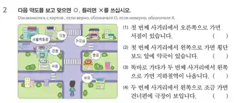

움직이는 한국어 연습
Картинки, drag-and-drop и автопроверка.
1
그림을 보고 알맞은 말을 써 보세요.
Введите слово по картинке.
2
몇 번째 요일인지 맞혀 보세요.
Порядковые задания идут вразброс.
3
몇 번째 달인지 맞혀 보세요.
Месяцы тоже вразброс.
4
교통 어휘와 그림을 연결해 보세요.
Новые красивые иллюстрации.
5
방향 / 동작 어휘와 그림을 연결해 보세요.
Перетащите слово к нужной ситуации.
6
표지판과 문장을 연결해 보세요.
7
약도를 보고 맞으면 O, 틀리면 X를 고르세요.
